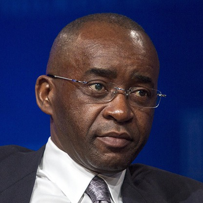

Strive Masiyiwa (born 29 January
1961) is a London-based Zimbabwean businessman, entrepreneur, and
philanthropist. He is the founder and executive chairman of diversified
international telecommunications group Econet Wireless.
He has won numerous
accolades and gained international recognition for his business expertise and
philanthropy, and is considered one of Africa's most generous
humanitarians.Masiyiwa has used his wealth to provide scholarships to over
100,000 young Africans over the past 20 years through his family foundation. He
supports over 40,000 orphans with educational initiatives, as well as sponsoring
students at universities in America, The United Kingdom, and China.
Masiyiwa also funds
initiatives in public health and agriculture across the African continent.
Strive Masiyiwa was born in
the African country of Zimbabwe on 29 January, 1961. He attended primary school
in Zambia before completing his secondary education in Scotland. He holds a
degree in Electrical Engineering from the University of Wales.
Strive Masiyiwa serves on
the boards of some global organisations, including The Rockefeller Foundation,
US Council on Foreign Relations International Advisory Board,the Asia Society,
the Africa Progress Panel (APP) Alliance for a Green Revolution in Africa
(AGRA), The Micronutrient Initiative of Canada, Grow Africa, The African Union's
(AU) EBOLA Fund,[10] Morehouse College Board, and The Pan African Strategic
Institute.
Masiyiwa also sits on two
United Nations Advisory Panels and is the only African member of the United
States Holocaust Memorial Museum's Committee on Conscience.
In 1998, the World Junior
Chamber of Commerce named Masiyiwa one of the "10 most outstanding young leaders
of the world", an accolade previously bestowed to John Kennedy.
In 2003, a CNN Time magazine
poll named Masiyiwa as one of the most influential business leaders in the
world.<
In 2012, President Barack
Obama invited Masiyiwa and four other business leaders to attend the 38th G8
summit at Camp David to address them on strategies on how to increase food
production and end poverty in parts of Africa.
In 2014 Fortune Magazine
named Masiyiwa one of the 50 most influential business leaders in the world.
In September 2014, the Chair
of the African Union (AU), Nkosazana Dlamini-Zuma, asked Masiyiwa to help
mobilise resources for Africa's response to the EBOLA outbreak. This was the
first time The AU had asked a business leader to undertake such a role.Masiyiwa,
with the help of other leaders, set up the first ever Pan African fund raising
campaign known as #AfricaAgainstEbola Solidarity Fund.
The fund has raised millions
of US dollars from the public using SMS donations, with contributions coming
from many African countries. The donations enabled The AU to deploy the largest
known contingency of African healthcare workers to combat the spread of the
deadly pandemic
In 2015 Forbes Magazine
named Masiyiwa in the 10 Most Powerful Men in Africa list for 2015.
In 2015, the International
Rescue Committee (IRC) awarded Masiyiwa the Freedom Award. The award is given
annually to an individual who makes an extraordinary contribution towards
supporting refugees and championing the causes of liberty, individual freedom,
and dignity.
At the UN Global Leadership 2015 awards dinner in New York, USA; The Africa Against Ebola Campaign was recognised for their humanitarian contributions and outstanding work in response to the Ebola epidemic. Chairman of the Trust, Masiyiwa accepted the award on behalf the Africa Against Ebola Solidarity Trust.